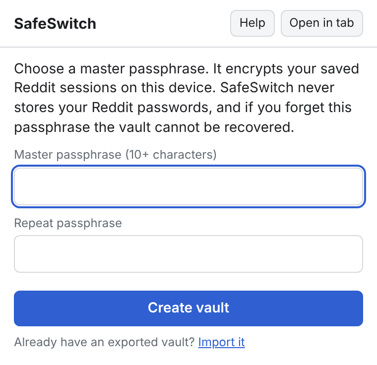
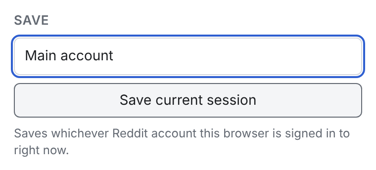
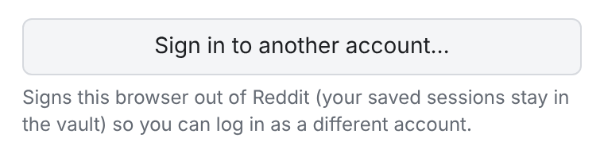
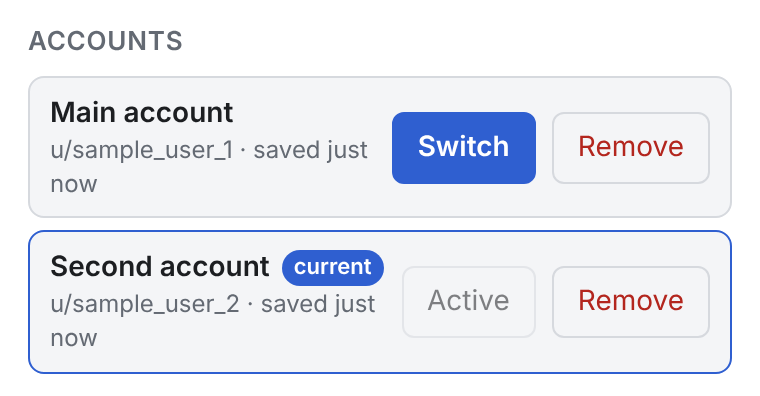

SafeSwitch: getting started
Keep two or more Reddit accounts signed in at the same time and switch between them with one click. Setting up takes about two minutes, and you only do it once.
How it works
When you sign in to Reddit, your browser keeps a sign-in "session". SafeSwitch saves a copy of that session for each account in an encrypted vault on your computer, protected by a master passphrase that only you know. Switching puts a saved session back, so Reddit sees you as that account.
SafeSwitch never sees or stores your Reddit password.
Set up two accounts
You will need to sign in to each account once. Have both Reddit usernames and passwords ready.
-
Create your vault
Click the SafeSwitch icon in the toolbar. If you can't see it, open the puzzle-piece menu and pin it. Choose a master passphrase of 10 or more characters and press Create vault.
Write the passphrase down somewhere safe. If you forget it, the vault cannot be recovered and you will have to start again.

-
Sign in to account 1 and save it
Go to reddit.com and sign in to your first account as usual (two-factor authentication works normally). Then click the SafeSwitch icon, type a name in Label, for example "Main", and press Save current session.
If you leave Label empty, SafeSwitch uses your Reddit username.

-
Sign out the SafeSwitch way
Press Sign in to another account…. SafeSwitch clears Reddit's sign-in from this browser without using Reddit's own Log out, so Reddit is not told to end account 1's session.

Used Reddit's own "Log out" instead? That works too, but Reddit then ends that session for good. When you later switch to that account, Reddit shows you as a guest. This is easy to repair: see "Reddit shows me as a guest after switching" below.
-
Sign in to account 2 and save it
On reddit.com, sign in to your second account. Click the SafeSwitch icon, type a different label, for example "Second", and press Save current session.
-
Switch with one click
Both accounts now appear in the list. The one you are using is marked current. Press Switch next to the other one and every open Reddit tab reloads as that account.

That's it. From now on, both accounts stay signed in, and you can switch back and forth whenever you like.
Everyday use
- Switch: click the SafeSwitch icon, then Switch next to the account you want.
- Add another account: press Sign in to another account…, sign in to the new account on Reddit, then press Save current session.
- Remove an account: press Remove. This only deletes the saved copy from the vault. Your Reddit account itself is not touched.
- Lock and unlock: the vault locks by itself after 15 minutes of inactivity (you can change this under Settings & backup) and whenever you close the browser. Press Lock to lock it now. Locking does not sign you out of Reddit. You type your passphrase to unlock the vault again.
Good to know
- Use "Sign in to another account…" instead of Reddit's Log out for accounts you have saved. Reddit's Log out ends the session on Reddit's side and the saved copy stops working.
- One account at a time per browser. Switching changes the account for the whole browser, so all your Reddit tabs show the same account.
- SafeSwitch keeps the saved copy fresh. When you switch away from an account it recognises, it saves that account's latest session first.
- Sessions can end. Changing your Reddit password, using "log out of all sessions", or simply a long time passing can end a saved session. Sign in again and press Save current session.
- The "not saved" warning protects you. If you are signed in to an account that isn't in the vault, SafeSwitch warns you before switching, because switching would sign that account out and its session would be lost. Press Cancel, press Save current session, then switch.
Troubleshooting
Reddit shows me as a guest after switching
Reddit has ended that account's saved session. This usually happens if you used Reddit's own Log out, or Reddit signed the session out for security reasons.
Fix: sign in to that account again on reddit.com. SafeSwitch recognises it and updates the saved copy the next time you switch away from it. If the account list says "username unknown", press Save current session after signing in instead. After this one-time repair, both accounts stay signed in.
"No signed-in Reddit session found" when saving
SafeSwitch can only save an account you are currently signed in to in this browser. Open reddit.com, make sure you are signed in (reload the page if needed), then press Save current session again.
The list says "username unknown"
SafeSwitch asks Reddit which account is signed in. If that request fails (for example when you are offline), it can't show the username. Saving and switching still work. You only need to type a label yourself when saving.
I forgot my master passphrase
It can't be recovered, because the vault is encrypted with it. On the unlock screen press Forgot your passphrase? to delete the vault and start again. You will need to sign in to your accounts and save them again. Your current Reddit login in the browser is not affected.
The popup closes when I pick a backup file
Some browsers close small popups when a file picker opens. Press Open in tab at the top of the popup and import or export from the full-tab version.
Backup and moving to another computer
- Export: open Settings & backup and press Export encrypted vault. You get a file that is useless without your passphrase.
- Import: on the other computer, install SafeSwitch, then press Import it on the first screen (or use Settings & backup) and choose the file. Unlock it with the passphrase it was created with.
- Saved sessions can expire over time, so an old backup may need accounts re-saved.